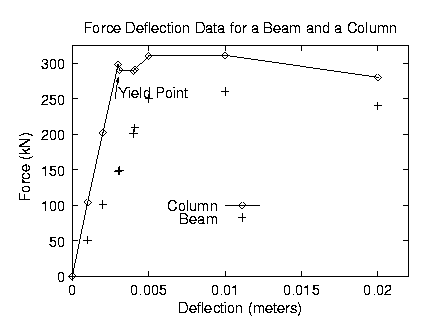
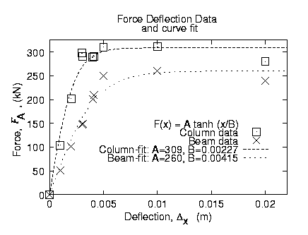

Department of Civil and Environmental Engineering
Edmund T. Pratt School of Engineering
Duke University - Box 90287,
Durham,
NC 27708-0287
Gnuplot is a free, command-driven, interactive, function and data plotting program. Pre-compiled executeables and source code for Gnuplot 4.2.4 may be downloaded for OS X, Windows, OS2, DOS, and Linux. The enhancements provided by version 4.2 are described here.
On Windows, unzip gp424win32.zip into an appropriate directory, (e.g. C:\My Programs\Gnuplot, C:\Gnuplot, C:\Apps\gnuplot, etc.). Make a link from ...\gnuplot\bin\wgnuplot.exe to your desktop or some other convenient location. Click on this link, and the Gnuplot window should open.
Instructions for installing on OS X are here.
On Unix, Linux and OS X systems start Gnuplot by simply opening a terminal and typing:
gnuplot
For help on any topic type help followed by the name of the topic.
Full documentation is provided here.
In general, any mathematical expression accepted by C, FORTRAN, Pascal, or BASIC may be plotted. The precedence of operators is determined by the specifications of the C programming language.
The supported functions include:
__________________________________________________________
Function Returns
----------- ------------------------------------------
abs(x) absolute value of x, |x|
acos(x) arc-cosine of x
asin(x) arc-sine of x
atan(x) arc-tangent of x
cos(x) cosine of x, x is in radians.
cosh(x) hyperbolic cosine of x, x is in radians
erf(x) error function of x
exp(x) exponential function of x, base e
inverf(x) inverse error function of x
invnorm(x) inverse normal distribution of x
log(x) log of x, base e
log10(x) log of x, base 10
norm(x) normal Gaussian distribution function
rand(x) pseudo-random number generator
sgn(x) 1 if x > 0, -1 if x < 0, 0 if x=0
sin(x) sine of x, x is in radians
sinh(x) hyperbolic sine of x, x is in radians
sqrt(x) the square root of x
tan(x) tangent of x, x is in radians
tanh(x) hyperbolic tangent of x, x is in radians
___________________________________________________________
Bessel, gamma, ibeta, igamma, and lgamma functions are also
supported. Many functions can take complex arguments.
Binary and unary operators are also supported.
The supported operators in Gnuplot are the same as the corresponding operators in the C programming language, except that most operators accept integer, real, and complex arguments. The ** operator (exponentiation) is supported as in FORTRAN. Parentheses may be used to change the order of evaluation. The variable names x, y, and z are used as the default independent variables.
3. THE plot AND splot COMMANDS
plot and splot are the primary commands in Gnuplot. They plot functions and data in many many ways. plot is used to plot 2-d functions and data, while splot plots 3-d surfaces and data.
Syntax:
plot {[ranges]}
{[function] | {"[datafile]" {datafile-modifiers}}}
{axes [axes] } { [title-spec] } {with [style] }
{, {definitions,} [function] ...}
where either a [function] or the name of a data file enclosed in quotes is supplied. For more complete descriptions, type: help plot help plot with help plot using or help plot smooth .
3.1 Plotting Functions
To plot functions simply type: plot [function] at the gnuplot> prompt.
For example, try:
gnuplot> plot sin(x)/x
gnuplot> splot sin(x*y/20)
gnuplot> plot sin(x) title 'Sine Function', tan(x) title 'Tangent'
3.2 Plotting Data
Discrete data contained in a file can be displayed by specifying the name of the data file (enclosed in quotes) on the plot or splot command line. Data files should have the data arranged in columns of numbers. Columns should be separated by white space (tabs or spaces) only, (no commas). Lines beginning with a # character are treated as comments and are ignored by Gnuplot. A blank line in the data file results in a break in the line connecting data points.
For example your data file, force.dat , might look like:
# This file is called force.dat
# Force-Deflection data for a beam and a bar
# Deflection Col-Force Beam-Force
0.000 0 0
0.001 104 51
0.002 202 101
0.003 298 148
0.0031 290 149
0.004 289 201
0.0041 291 209
0.005 310 250
0.010 311 260
0.020 280 240
You can display your data by typing:
gnuplot> plot "force.dat" using 1:2 title 'Column', \
"force.dat" using 1:3 title 'Beam'
Do not type blank space after the line continuation character, "\" .
Your data may be in multiple data files. In this case you may make your plot by using a command like: gnuplot> plot "fileA.dat" using 1:2 title 'data A', \
"fileB.dat" using 1:3 title 'data B'
For information on plotting 3-D data, type:
gnuplot> help splot datafile
4. CUSTOMIZING YOUR PLOT
Many items may be customized on the plot, such as the ranges of the axes, the labels of the x and y axes, the style of data point, the style of the lines connecting the data points, and the title of the entire plot.
4.1 plot command customization
Customization of the data columns, line titles, and line/point style are specified when the plot command is issued. Customization of the data columns and line titles were discussed in section 3.
Plots may be displayed in one of eight styles: lines, points, linespoints, impulses, dots, steps, fsteps, histeps, errorbars, xerrorbars, yerrorbars, xyerrorbars, boxes, boxerrorbars, boxxyerrorbars, financebars, candlesticks or vector To specify the line/point style use the plot command as follows:
gnuplot> plot "force.dat" using 1:2 title 'Column' with lines, \
"force.dat" u 1:3 t 'Beam' w linespoints
Note that the words: using , title , and with can be abbreviated as: u , t , and w . Also, each line and point style has an associated number.
4.2 set command customization
Customization of the axis ranges, axis labels, and plot title, as well as many other features, are specified using the set command. Specific examples of the set command follow. (The numerical values used in these examples are arbitrary.) To view your changes type: replot at the gnuplot> prompt at any time.
Create a title: > set title "Force-Deflection Data"
Put a label on the x-axis: > set xlabel "Deflection (meters)"
Put a label on the y-axis: > set ylabel "Force (kN)"
Change the x-axis range: > set xrange [0.001:0.005]
Change the y-axis range: > set yrange [20:500]
Have Gnuplot determine ranges: > set autoscale
Move the key: > set key 0.01,100
Delete the key: > unset key
Put a label on the plot: > set label "yield point" at 0.003, 260
Remove all labels: > unset label
Plot using log-axes: > set logscale
Plot using log-axes on y-axis: > unset logscale; set logscale y
Change the tic-marks: > set xtics (0.002,0.004,0.006,0.008)
Return to the default tics: > unset xtics; set xtics auto
Other features which may be customized using the set command are: arrow, border, clip, contour, grid, mapping, polar, surface, time, view, and many more. The best way to learn is by reading the on-line help information, trying the command, and reading the Gnuplot manual. You may also post questions to the newsgroup comp.graphics.apps.gnuplot
The Gnuplot demo page and the gnuplot intro page have many examples like this script for a transfer function producing this postscript plot.
5. PLOTTING DATA FILES WITH OTHER COMMENT CHARACTERS
If your data file has a comment character other than # you can tell Gnuplot about it. For example, if your data file has "%" comment characters (for Matlab compatability), typing
gnuplot> set datafile commentschars "#%"indicates that either a "#" or a "%" character starts a comment.
6. GNUPLOT SCRIPTS
Sometimes, several commands are typed to create a particular plot, and it is easy to make a typographical error when entering a command. To stream- line your plotting operations, several Gnuplot commands may be combined into a single script file. For example, the following file will create a customized display of the force-deflection data:
# Gnuplot script file for plotting data in file "force.dat"
# This file is called force.p
set autoscale # scale axes automatically
unset log # remove any log-scaling
unset label # remove any previous labels
set xtic auto # set xtics automatically
set ytic auto # set ytics automatically
set title "Force Deflection Data for a Beam and a Column"
set xlabel "Deflection (meters)"
set ylabel "Force (kN)"
set key 0.01,100
set label "Yield Point" at 0.003,260
set arrow from 0.0028,250 to 0.003,280
set xr [0.0:0.022]
set yr [0:325]
plot "force.dat" using 1:2 title 'Column' with linespoints , \
"force.dat" using 1:3 title 'Beam' with points
Then the total plot can be generated with the command: gnuplot> load 'force.p'
7. CURVE-FITTING WITH GNUPLOT
To fit the data in force.dat with a function use the commands:
f1(x) = a1*tanh(x/b1) # define the function to be fit
a1 = 300; b1 = 0.005; # initial guess for a1 and b1
fit f1(x) 'force.dat' using 1:2 via a1, b1
Final set of parameters Asymptotic Standard Error
======================= ==========================
a1 = 308.687 +/- 10.62 (3.442%)
b1 = 0.00226668 +/- 0.0002619 (11.55%)
and the commands:
f2(x) = a2 * tanh(x/b2) # define the function to be fit
a2 = 300; b2 = 0.005; # initial guess for a and b
fit f2(x) 'force.dat' using 1:3 via a2, b2
Final set of parameters Asymptotic Standard Error
======================= ==========================
a2 = 259.891 +/- 12.82 (4.933%)
b2 = 0.00415497 +/- 0.0004297 (10.34%)
The curve-fit and data may now be plotted with the commands:
set key 0.018,150 title "F(x) = A tanh (x/B)" # title to key!
set title "Force Deflection Data \n and curve fit" # note newline!
set pointsize 1.5 # larger point!
set xlabel 'Deflection, {/Symbol D}_x (m)' # Greek symbols!
set ylabel 'Force, {/Times-Italic F}_A, (kN)' # italics!
plot "force.dat" using 1:2 title 'Column data' with points 3, \
"force.dat" using 1:3 title 'Beam data' with points 4, \
a1 * tanh( x / b1 ) title 'Column-fit: A=309, B=0.00227', \
a2 * tanh( x / b2 ) title 'Beam-fit: A=260, B=0.00415'

8. SPREAD-SHEET LIKE CALCULATIONS ON DATA
Gnuplot can mathematically modify your data column by column:
to plot sin( col.3 + col.1 ) vs. 3 * col.2 type:
plot 'force.dat' using (3*$2):(sin($3+$1))
9. MULTI-PLOT
Gnuplot can plot more than one figure in a frame ( like subplot in matlab ) i.e., try:
set multiplot; # get into multiplot mode
set size 1,0.5;
set origin 0.0,0.5; plot sin(x);
set origin 0.0,0.0; plot cos(x)
unset multiplot # exit multiplot mode
10. GNUPLOT DEMO FILES AND THE GNUPLOT FAQ
Most of Gnuplot's current features are illustrated in one or more of the Gnuplot demonstration files. To run the demo's yourself, download and unzip demo.zip, start Gnuplot from the resulting demo directory, and type
load "all.dem"The Gnuplot feature you are looking for will probably be illustrated in one of the demo files. Gnuplot 4.2 also has an extensive FAQ.
11. HARD-COPY (PLOTTING ON PAPER)
You can create a PostScript file of your plot by using the following files and commands. First, download and save the following general-purpose Gnuplot script: save.plt
# File name: save.plt - saves a Gnuplot plot as a PostScript file
# to save the current plot as a postscript file issue the commands:
# gnuplot> load 'saveplot'
# gnuplot> !mv my-plot.ps another-file.ps
set size 1.0, 0.6
set terminal postscript portrait enhanced mono dashed lw 1 "Helvetica" 14
set output "my-plot.ps"
replot
set terminal x11
set size 1,1
Then simply type the following commands to create and print the plot
gnuplot> load 'save.plt'
gnuplot> !mv my-plot.ps force.ps
gnuplot> !lpr force.ps
The PostScript files produced by Gnuplot may be read and edited
with a text editor. The PostScript file format convention
used by Gnuplot is described in
this document by Richard Crawford.
12. ADVANCED COMPUTATION AND VISUALIZATION
Gnuplot is used for plotting in a free and open Matlab-like programming environment called Octave.
13. PRINTING TWO FIGURES ON ONE PAGE
If you would like two figures to be laser-printed on the same page, you may use the following shell script. Create file cat2 , below, and make the file executable by typing: unix% chmod +x cat2
# cat2: Shell script for putting two Gnuplot plots on one page
echo %! > g.ps
echo gsave >> g.ps
echo 0 400 translate >> g.ps # for Gnuplot plots
cat $1 | sed -e "s/showpage//" >> g.ps
echo grestore >> g.ps
echo gsave >> g.ps
echo 0 090 translate >> g.ps # for Gnuplot plots
cat $2 >> g.ps
lpr -Phudsonlp1 g.ps
To combine two PostScript figures (plot1.ps and plot2.ps) on one page:
cat2 plot1.ps plot2.ps